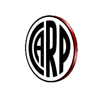
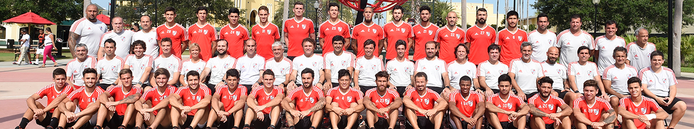

Los 25 jugadores del plantel definitivo son:
- Arqueros (4)
- Armani Franco,
- Bologna Enrique,
- Centurion Ezequiel
- Lux German.
- Defensores (9)
- Rojas Robert,
- Angileri Frabizio,
- Lollo Luciano,
- Sibille Kevin,
- Casco Milton,
- Pinola Javier,
- Martinez Quarta Lucas,
- Montiel Gonzalo,
- Gallardo Nahuel.
- Volantes (11)
- Zuculini Bruno,
- Carrascal Jorge,
- Quintero Juan Fernando,
- De la Cruz Nicolas,
- Sosa Santiago,
- Palacios Exequiel,
- Mayada Camilo,
- Ferreira Cristian,
- Ponzio Leonardo,
- Perez Enzo,
- Fernandez Ignacio.
- Delanteros (5)
- Suarez Matias,
- Alvarez Julian,
- Santos Borre Rafael,
- Pratto Lucas,
- Scocco Ignacio.
- Director tecnico:
- Gallardo Marcelo.
- Ayudantes de campo:
- Biscay Matias,
- Bujan Hernan.
- Preparadores fisicos:
- Dolce Pablo,
- Zinelli Cesar,
- Gamalero Diego,
- Tulbovitz Marcelo.
- Medicos:
- Hansing Pedro,
- Rossi Sandra,
- Brandt Federico.
- Kinesiologos:
- Bombicino Jorge,
- Confalonieri Enrique,
- Pandini Gaston,
- Loyarte Marcos.
- Masoterapeuta:
- Zapienza Marcelo.
- Entrenador de arqueros:
- Montes Alberto.
- Nutricionista:
- Pudelka Marcelo.
- Psicologo:
- Nigro Pablo.
- Jefe de prensa:
- Ghirlanda Matias.
- Videoanalista:
- Hidalgo Nahuel.
- Utileros:
- Quiroga Raul,
- Scarpelli Ariel,
- Tula Manuel.
